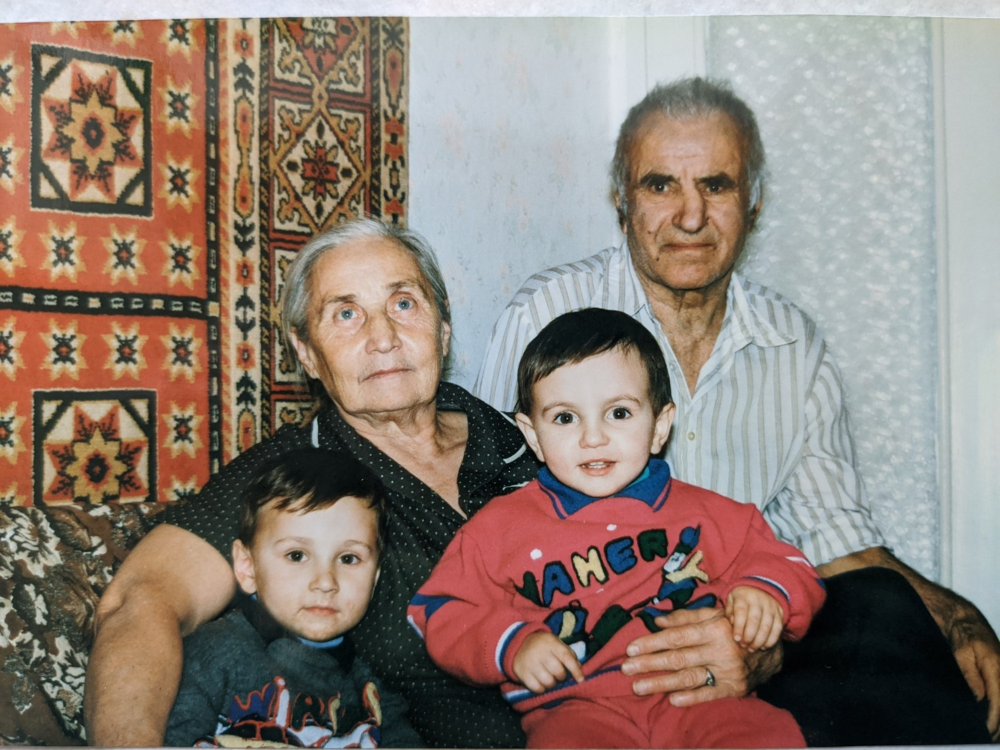

Григорян Джанибек Игитович
![Рисунок10[1]](io23_13_6.jpg) Рисунок10[1] (фрагмент).
Рисунок10[1] (фрагмент). Родился: 07.01.1929
Умер: ?
Место жительства: Ангарск
Место рождения: д. Воскиат Ашт Воскеа́т— село на юге Арагацотнской области, Армения. Село расположено в 11 км к юго-западу от города Аштарака. араткий район
Пытался устроится на Эктролизно-химический комбинат, но его не взяли потому что его родители родились в Турции. Затем выучился на водительские права стал работать водителем.
В 1959г. познакомился с Ацутой Еленой Васильевной в колхозе Иркутского района. Всех отправляли с работы в колхоз. Он работал водителем.
Был женат на Григорян Ларисе Андреевне (Врач) имел дочь – Григорян Сусану Джанебековну 1954г.р.
Жена не дала развода, поэтому Дети были записаны на фамилию Ацута.
Отец: Саакян Игит
Мать: Саакян (Григорян) Гюзал
Сестра: Саакян (Саакян ) Азнив Игитовна
Брат: Саакян Сорибек Игитович
Брат: Саакян Бограт Игитович
Сестра: Саакян Сусана Игитовна
Сестра: (Саакян ) Алик Игитовна
Жена: Григорян Лариса Андреевна
Дочь: Григорян Сусанна Джанибековна
Мать детей: Ацута (Ацута) Елена Васильевна
Сын: Ацута Андрей Джанебекович
Сын: Ацута Эдуард Джанебекович
Рисунок1: Ангарск.  Рисунок17. Рисунок17.  Рисунок9. Рисунок9. |
![Рисунок10[1]](io23.jpg) Рисунок10[1]. Рисунок10[1]. |